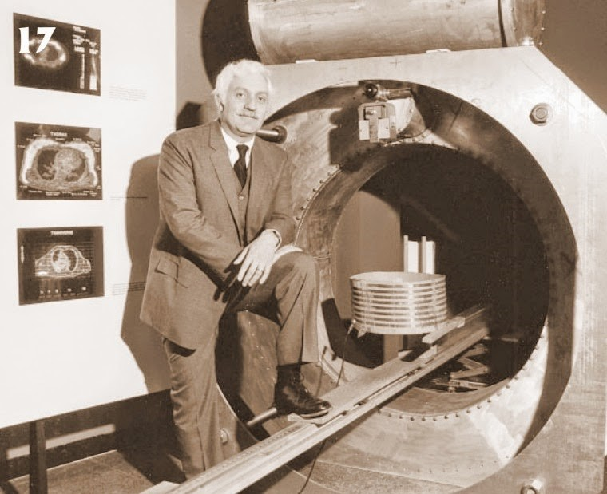
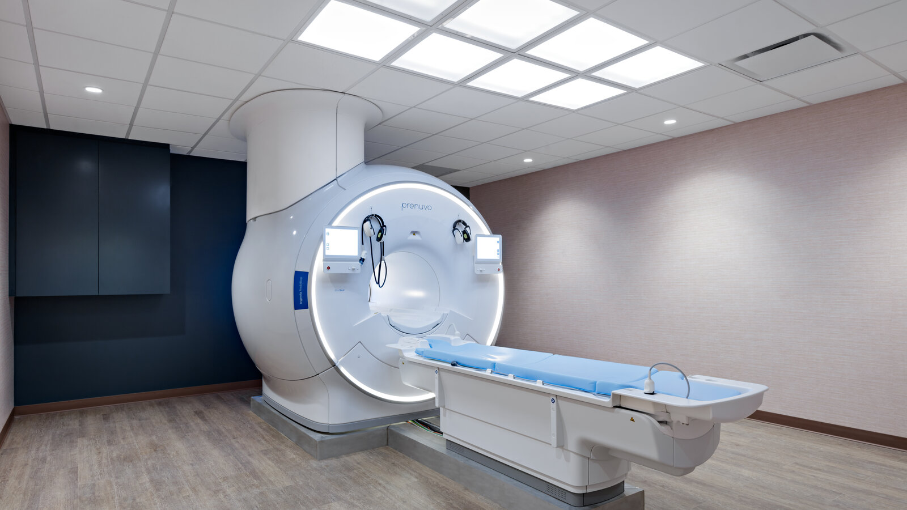

The Major Milestones in the Creation of the MRI
Critical Dates
| Date | Development | Contributor/s |
|---|---|---|
| 1940s | NMR is discovered | Felix Bloch & Edward Purcell |
| 1971 | 2D reconstruction of NMR signals | Dr. Paul Lauterbur |
| 1971 | NMR able to distinguish between normal and cancerous tissue | Dr. Raymond Damadian |
| 1973 | Rapid imaging and signal reconstruction techniques (ECI) | Sir Peter Mansfield |
| 1977 | First full-body MRI scan of a human | Dr. Raymond Damadian |
| 1980s | Commercialization and clinical adoption of MRIs | Various |
| 1992 | fMRI for mapping brain activity through changes in blood flow | Seiji Ogawa |
| 1994 | DTI proposed for use in MRIs | Peter Basser |
Early Days
The development of the MRI machine didn't start out having anything to do with medical diagnostics. It actually began as research into fundamental physics in the 1940s. Two different individuals independently discovered Nuclear Magnetic Resonance (known as NMR), which is a phenomenon where atomic nuclei absorb and re-emit radio frequency energy when placed in a strong magnetic field. Those two individuals were Felix Bloch of Switzerland, and Edward Purcell of the United States of America. They won the Nobel Prize in Physics in 1952 for their groundbreaking work, which was initially used primarily for chemical analysis. It wasn't until the 1970s that NMR evolved to be used in the world of medicine.
Move to Medicinal Applications
In 1973, a man named Paul Lauterbur proposed the idea of using magnetic field gradients to spatially encode NMR signals, which allowed the reconstruction of 2D images from those signals. In the same year, Dr. Raymond Damadian demonstrated that NMR could distinguish between normal and cancerous tissue, which was the breakthrough moment for MRI technology to move into medical applications. Two years later, another man named Peter Mansfield successfully developed mathematical techniques for rapid imaging and signal reconstruction, including the crucial ECI (echo-planar imaging) method. This earned them the Nobel Prize in Physiology or Medicine in 2003.
Rapid Advancement
In the late 1970s and early 1980s MRI whole body scanners saw rapid development through higher field strengths, faster pulse sequences, and parallel imaging techniques. These advancements improved image quality and reduced scanning times. In the modern day we also have other variants for specialized purposes such as fMRI for mapping brain activity, and DTI for visualizing neural pathways.
Sources
- The history of the MRI: The development of Medical Resonance Imaging. Midwestern Career College. (2024, July 11). https://mccollege.edu/aas-in-magnetic-resonance-imaging-mri-technology/about-the-mri-technology-career/the-history-of-the-mri-development-of-medical-resonance-imaging/
- Why MRI is a game changer in Radiology. MBRI. (2025, March 25). https://mbri.co.za/news-events/why-mri-is-a-game-changer-in-radiology-diagnosis/
- Kathiravan, S., & Kanakaraj, J. (2013, November 27). A review on potential issues and challenges in Mr Imaging. TheScientificWorldJournal. https://pmc.ncbi.nlm.nih.gov/articles/PMC3863452/